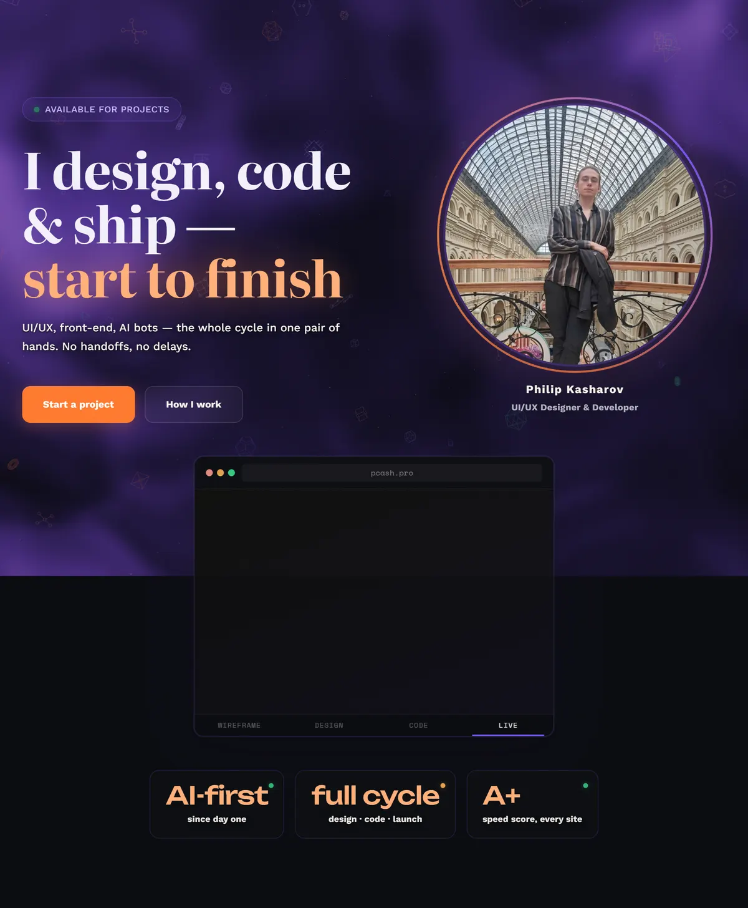
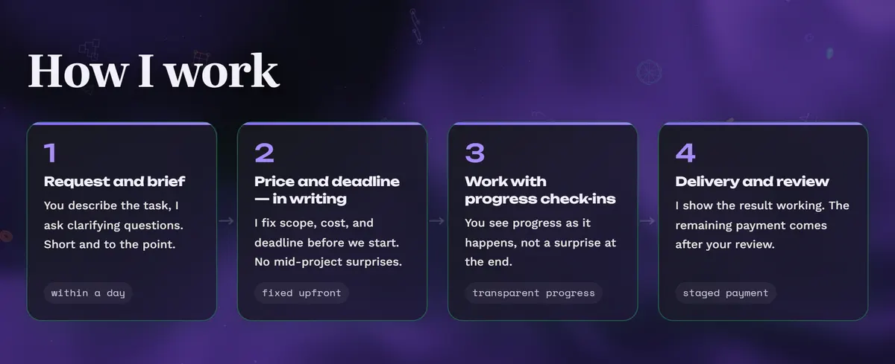
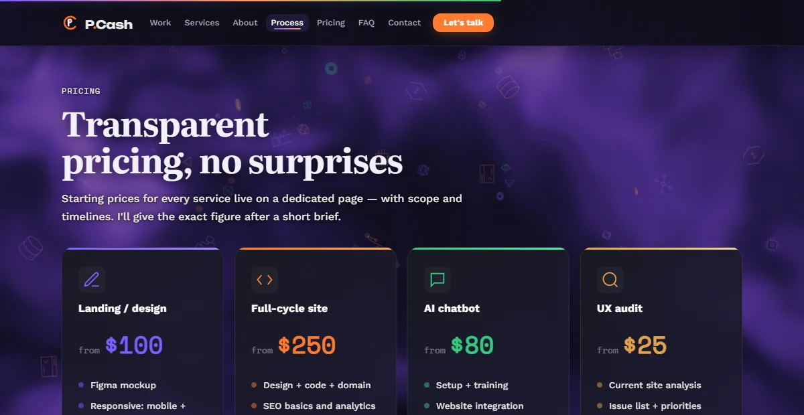
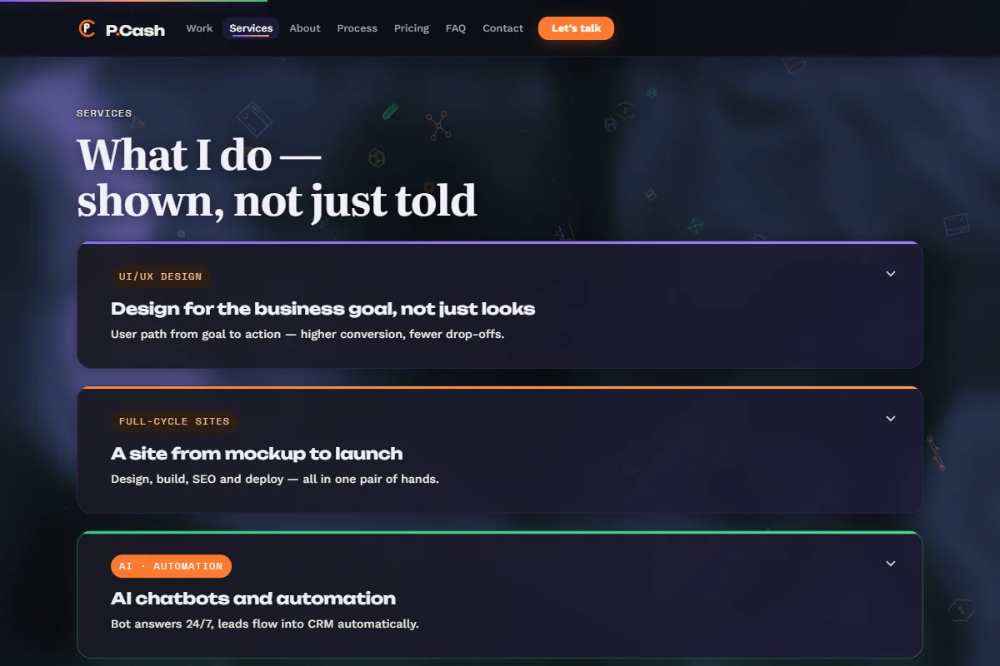
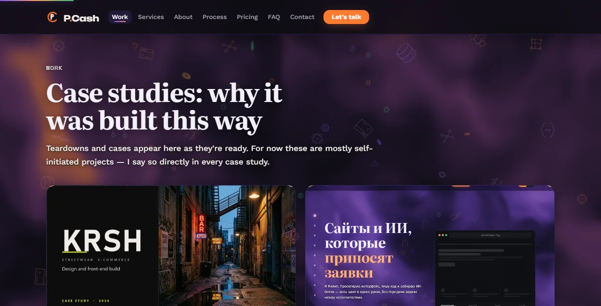
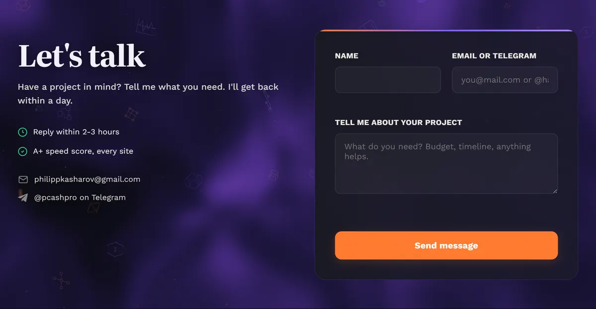

I built my own portfolio from scratch. Here's every decision I made
This is the site you're on right now. I designed, coded and shipped it myself — no templates, no frameworks. Below I walk through the thinking behind every major choice: what I tried, what I cut, and why.
Design · UX · front-end · copySolo, end to endVanilla JS + GSAP + Three.js5 pages
I'm a freelancer. My site is the first thing a potential client sees — before any portfolio link, before any call. If the site itself isn't well-made, nothing I write on it matters. So I set one rule: every effect, every animation, every visual choice stays only if it proves a skill or helps the visitor act. Everything that was just "cool" got cut.

The hero: who I am, what I do, two ways to act. Nothing else competes for attention.
Design decisions
What I chose and why
Every decision below started with a problem I ran into during the build. None of them are taste — each one has a reason you can verify on the live page.
01 · I gave each colour a single job
Problem
I had three accent colours — orange, violet, green — and early on they were everywhere. Orange showed up on buttons, price tags, and headings. The page looked colourful but nothing stood out as "click me".
What I did
Locked each colour to one role. Orange = actions and prices. Violet = interactive highlights. Green = status (online, available). I use --accent in CSS, never a colour name — so the rule holds even when I forget.
Result
Visitors learn the system in seconds: see orange, click it. Dark text on orange passes WCAG at 11.2:1 contrast.

Orange on CTAs only, violet on hover states, green on status dots.
02 · I turned decoration into navigation
Problem
I had a "01 / 11" section counter in the corner. It looked slick but told the visitor nothing useful — just a number.
What I did
Replaced it with a vertical dot column. Each dot anchors to a section, the current one lights up, and hovering shows the section name.
Result
Same corner, same footprint — but now it actually helps people move around a long page.
03 · I replaced random particles with meaning
Problem
Floating dots layered on top of the background shader. Two moving layers at once made the page feel noisy and pulled attention away from the text.
What I did
Swapped the random dots for ten schematic icons — one for each service I offer: microchip, terminal, neural net, API, database, automation, artboard, Bézier curve, git branch, waveform.
Result
Same canvas, same performance — but the background now quietly says what I do instead of being visual noise.
04 · I killed the 3D card tilt
Problem
Service cards tilted toward the cursor on hover. Cool in isolation, but next to the flat, minimal layout it looked like a different website.
What I did
Cut it entirely. Replaced with a subtle lift (2–4px) and a violet border glow. Same hover feedback, same visual system as everything else.
Result
Every card on the site now behaves the same way. The page feels like one coherent product.
05 · I ditched the price calculator
Problem
I built an interactive calculator — tick services, get a price range. But it asked visitors to configure something before they even knew the ballpark.
What I did
Replaced it with four starting prices, payment terms in one line, and a link to a full pricing page for people who want detail.
Result
The ballpark reads in two seconds. Detail is one click away for those who need it.

Four prices, payment terms, one link. No calculator, no configuration.
06 · I split surfaces into solid and transparent
Problem
The WebGL background looks great, but reading body text over a moving gradient is painful.
What I did
Cards and blocks that carry text are solid dark. Everything else stays transparent so the background shows through. No section dividers — the page scrolls as one continuous canvas.
Result
Text is always readable, the background is always visible, and neither fights the other.

Solid cards over the living background. Copy stays sharp, atmosphere stays alive.
07 · I picked a serif that means something
Problem
Headings used the same sans-serif as body text. The page had zero typographic personality — it could have been any developer template.
What I did
Chose Cormorant Garamond for all display headings — high-contrast, editorial, full Latin and Cyrillic support. Weight 600 so it reads clean on dark. Body stays on Work Sans.
Result
The contrast between an editorial serif and a geometric sans tells the story: design thinking meets clean code. The hairline serifs catch light against the dark background.
Performance
How I made the background 3x cheaper
The background is a WebGL shader — fractal noise that produces soft fog with no hard edges. Effects like this eat battery, so I found three ways to cut the cost without anyone noticing.
3 noise octaves instead of 5The last two add detail finer than a wisp of fog. You literally can't see the difference. Removing them saves about 40% of the shader's work.
Rendering at 45% resolutionFog is smooth gradients — it doesn't need pixel-perfect rendering. Running at 45% and upscaling cuts fragment shader work by roughly 5x.
30fps instead of 60The fog drifts slowly. At that speed, 30fps looks identical to 60. Half the GPU work for free.
Full shutdown when not neededHidden tab? Paused. Touch device? Off. Reduced-motion preference? Static CSS gradient. No wasted cycles.
Accessibility
The stuff you can't see in screenshots
A dark theme with a moving background is the fastest way to break accessibility. I built it into the design from the start instead of patching it at the end.
AAA contrast, not just AABody text on dark backgrounds holds above 7:1. Orange buttons use dark text instead of white — white on orange only hits 2.6:1, which fails even AA. Dark text passes at 11.2:1.
Reduced motion = completely off30 CSS blocks and 6 JS guards. If you prefer reduced motion, the shader never starts, animations are instant, and scrolling is native. Same content, same layout, no motion.
Content can't disappearSection reveals use IntersectionObserver. A safety net catches anything still hidden after page load and forces it visible. I learned this the hard way — a scroll event once left a whole section invisible.
The details most people skipSkip-link in the tab order. The burger menu's aria-expanded actually updates. Visible focus ring on every interactive element. Print stylesheet flips to plain text.
Honesty
What I deliberately left out
The easiest trap for a new freelancer is faking experience. I found three places where lying would have been simpler — and went the other way.
No testimonials sectionI don't have reviews yet, so I removed the section entirely. An empty "Reviews" block with a submission form implies they exist somewhere. When real ones come, the section comes back.
No client logosThe Work section says it clearly: these are self-initiated projects. Borrowing someone else's logo would build trust that collapses at the first real question.
Analytics wired but offPlausible is set up — no cookies, no personal data. But it's commented out until the site has real traffic. Nothing is collected, nothing leaves the page.

The Work section: self-initiated projects, stated upfront. No borrowed logos.
Stack
What I used and why
No React, no Next.js, no build tools. Every dependency earned its place by being measurably better than the vanilla alternative.
HTML + CSS + Vanilla JSStatic files, zero build steps, works on any host. Typography: Cormorant Garamond (headings), Work Sans (body), Space Mono (labels).
GSAP + ScrollTriggerSection reveals and transitions. IntersectionObserver fallback keeps content visible if GSAP doesn't load.
LenisSmooth inertia scrolling. Completely disabled under reduced-motion — native scroll is better in that case.
Three.jsThe WebGL fog shader. Renders at 45% resolution, 30fps. Falls back to a CSS gradient on mobile and for reduced-motion users.
Results
Numbers
Lighthouse: 100 / 100 / 100 / 100Performance, Accessibility, Best Practices, SEO — stable across every page, not a one-off screenshot.
30 reduced-motion CSS blocks + 6 JS guardsEvery animated element respects the user's system preference. Content and hierarchy stay intact.
AAA contrast (≥ 7:1) on all body textDouble the required minimum. The background palette is tuned so contrast never drops below this.
5 pages · 0 frameworksFully translated: headings, form labels, hints, validation errors, bot replies. Every string, not just the headlines.
Takeaway
What I learned
Cutting features is harder than adding themThe 3D tilt, the calculator, the particle system — each one took hours to build and seconds to cut. The site got better every time I removed something.
Accessibility isn't a checklist, it's a design constraintBuilding contrast and motion control into the decisions from day one was easier than retrofitting them later.
Honesty is a featureSaying "these are my own projects" upfront builds more trust than a borrowed logo ever could.
Every choice on this site grew out of a constraint, not a preference. That's the approach I bring to client work too.

The end of the page: one form, three fields, a promise to reply within a day.
The same rigour, for your project
Tell me the task — I'll reply within a day, and say so honestly if it isn't mine.